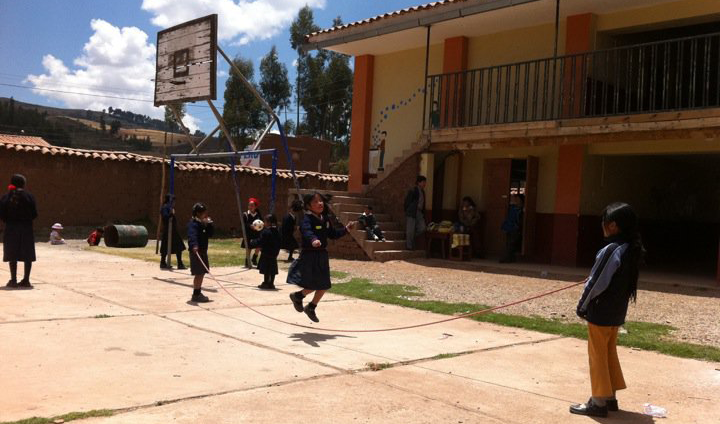
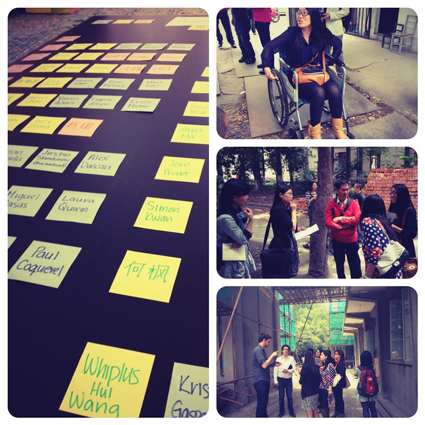
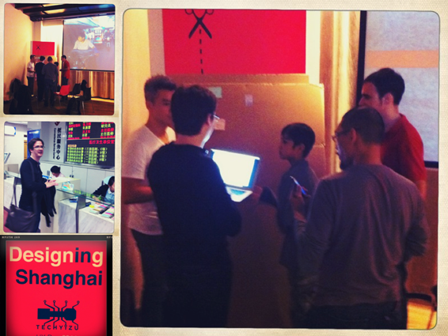
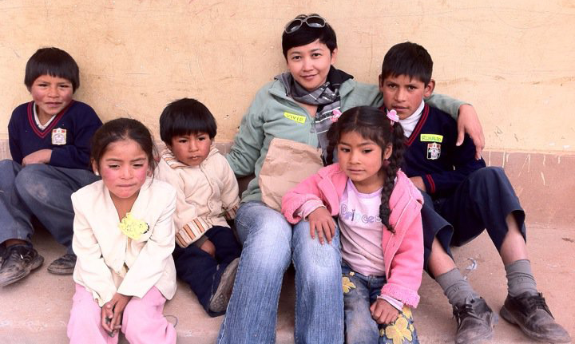
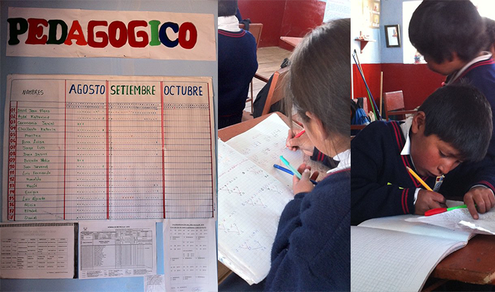

Design/Tech-related volunteer works
Outside of work, you'd find me involved in local organizations doing all sort of thing from design mentoring, organizing tech/design events like Barcamp, Hackathon, or teaching English in South America while on holidays.
-
mentor in 'Techyizu UX Day | Shanghai 2012
theme: Design for Mobility -- discovering best UX in public space that are friendly and useful for people with disabilities. focus: institutions for the disables in Shanghai

-
mentor in 'Techyizu UX Day | Shanghai 2011
theme: Designing Shanghai -- to observe and find better ways to improve the city public space and infrastructure for best possible UX for the general population.
focus: hospital services in Shanghai

-
core member |'Techyizu Shanghai since 2011
I helped mentoring startups team with focus on UX design, usability and help them realizing their MVP to market.Techyizu is a Shanghai-based volunteer-driven organization and supporters of the China startup and tech community. We organize events for people with a passion for technology, entrepreneurship, and social innovation. We organized events like Barcamp, Hackathon, Demo-Day, etc.
The original image from the 2014 source archive was unavailable during recovery. -
member of Xin Che Jian | Shanghai Hackerspace since 2011
I was involved in prototyping and organizing events to introduce kids to programming through fun activities like Spaghetti Bridge Competition, Build your own robot with Lego Mindstorm, Robot Race, etc. -
founding member of the Hacking Room | Munich Hackerspace since Jan 2013 Along with a friend of mine, who's also a member of Xin Che Jian Shanghai, we decided to start our own hackerspace when we both found ourselves moved to Munich. This happened after series of disappointments of not being able to find a place with real sense of community. A place where n00b like me, who simple want to tinker with things, can learn from other like-minded persons. The name Hacking Room has since been changed into Munich Maker Lab as of Jan 2014.
Education-related volunteer work
I took two and half months off in 2010 to do solo travel to South America. I went to El Salvador, Columbia and Peru. While in Peru, I volunteer to teach English for 5th and 6th grade for local school in Santa Ana, near Cusco in Peru.

I stayed with a local family in Cusco for about 1.5 months and was able to pick-up Spanish on the go. It was one of the easiest language I ever learned (just by listening through podcast), but also the fastest I forget thereafter. :-)

. . . . .
#personal #volunteer #education #startup #ux
. . . . .